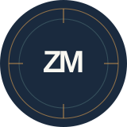

daily API requests handled across a globally distributed platform
01 / PLATFORM SCALESOFTWARE ENGINEER / AHMEDABAD, INDIA
Building systems
that move people
forward.
I’m Zain — a software engineer focused on payment experiences, resilient backends, and the details that make products feel effortless.
SCALABLE SYSTEMSPAYMENTS & CHECKOUTTHOUGHTFUL ENGINEERING
01 A LITTLE ABOUT ME
Good software should feel simple.
Getting there takes care.
I work across the backend and product boundary: shaping services, integrating payment providers, and improving the customer journeys they support. From checkout flows to globally distributed media systems, I enjoy making complex systems dependable and easy to use.

Based inAhmedabad, India
02 SELECTED IMPACTMeasured improvements, built with teams.
lower media player latency through streaming and system optimizations
02 / PERFORMANCEfaster database queries and improved migration performance
03 / EFFICIENCYSelected outcomes from my work at Gumlet.
03 CAREER
Experience
A few chapters in building
useful, reliable software.
2023 — NOW
Software Engineer
Gumlet · Remote
Engineering media infrastructure and platform capabilities at global scale.
- Helped scale systems serving 2B+ daily API requests and 80M+ streamed hours per day.
- Designed microservices for media ingestion, encoding, analytics, and asset lifecycle management.
- Improved player latency by 60%+ and database query times by 50% through focused optimization.
- Built video processing pipelines and cross-timezone analytics; delivered SSO, billing, and platform integrations.
2022 — 2023
Back-end Developer
Namshi.com · Dubai, UAE / Remote
Worked on the checkout team, building payment flows for a smoother customer experience.
- Developed payment, refund, provider-routing, order validation, and coupon workflows.
- Integrated two payment providers and moved routing to a weighted round-robin approach.
- Designed discount coupon features and user-based master coupons.
2021 — 2022
Software Engineer
Luxolis · Delhi, India
Built full-stack ERP capabilities and led backend work on a responsive sound conversion and modulation platform.
- Managed AWS database deployments and VPC connections.
2021
Software Engineer
Tailshire.com · Pune, India / Remote
Built and optimized services for an online pet-care platform.
- Developed Spring applications and AWS deployments, APIs, and caching improvements.
2020
Web Developer Intern
FinByz Tech Pvt Ltd · Ahmedabad, India
04 HOW I CONTRIBUTE
Where I do my best work
Curiosity, clear communication,
and a bias toward useful outcomes.
Payment systems
Provider integrations, routing, refunds, and the behind-the-scenes work that makes checkout trustworthy.
Backend platforms
Services and APIs designed for scale, clear ownership, and predictable operation.
Performance
Finding bottlenecks, improving the data path, and measuring whether a change made things better.
05 THE TOOLBOX
Tools I reach for
The right tool depends on the problem. These are technologies I’ve used across production systems and product work.
01Languages
JavaScript · TypeScript · Java · PHP
02Backend
Node.js · Express · NestJS · Spring Boot
03Data & infrastructure
Redis · MySQL · MongoDB · AWS · Google Cloud
04Platform
REST APIs · ClickHouse · BigQuery · FFmpeg
06 EDUCATION
Learning, always.
MSc, Information Technology
Dhirubhai Ambani Institute of Information and Communication Technology
BCA, Computer Languages
Xaviers Institute of Computer Application
Let’s build something
that matters.
Have an interesting engineering challenge or a team looking for a thoughtful builder? I’d be glad to connect.
OPEN TO GOOD CONVERSATIONS